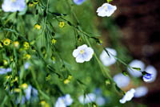
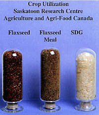
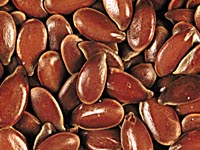
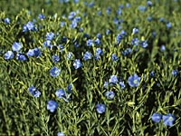

Flax seed has been keeping civilizations of the world healthy for 5000 years. Flax is a useful and powerful agent for treating fatty degeneration in cardiovascular disease, cancer, diabetes, and other diseases.
Flax is an oilseed that belongs to the genus Linium, one of ten genera is the family Linaceae. The genus contains more than 100 annual and perennial species. Cultivated flax belongs to the species L. usitatissimum, and its varieties are of two types: one is grown for oil and the other for fibre production. All flax varieties registered (registered seed) at present in Canada are brown-seeded. Canada is one of the world's leading exporters of flax seed.
What is Solin?
Using advanced crop breeding techniques, researchers have developed from flax a new oilseed -- solin. Solin oil contains less than 5% linolenic acid compared to more than 50% in flax seed oil, producing a light oil suitable for cooking. Solin varieties are distinguished from flax varieties by their yellow seed color.

Why is flax produced?
Flax has several uses in industry, nutrition and health. Most flaxseed has been used for
the production of linseed oil, which is unsuitable for foods because of a high linolenic acid content,
but has industrial uses (paints, varnishes, plastics, printing inks and linoleum).
The leftover meal becomes animal feed.
As with rapeseed/canola, breeding experiments with flax have been developing
varieties capable of yielding good quality food oils.
Commercially grown solin may compete very well with canola and other oils in food industries.

Nutritional Benefits of Flax
Flax is being discovered anew as the wonder grain of the 90's and the nutritional benefits of flaxseed
are high. Recent studies have shown flaxseed,
when eaten regularly and in moderate amounts, improves taxation, moderately reduces lowdensity lipoprotein (LDL) cholesterol (the "bad" cholesterol) and increases urinary lignan formation and excretion. The high production of mammalian lignans by humans provides protection against cancers and other diseases.
Inside flaxseed you will find:
- Carotene, Vitamin B1, B2, C, E, Lecithin and phospholipids: Flax contains all the anti-oxidants it needs to naturally keep the oil fresh within the seed. When the seed is cracked, the anti-oxidants will keep the oil fresh until they are all used up. If light and oxygen are kept away from the seed pulp or oil (by not breaking up the seed until just before use or packaging crushed seed in airtight foil packages), the natural, fresh anti-oxidants will be used within our bodies in their strength.
- Fiber: Fiber is a must for intestinal and colon health and flax seed has one of the best; mucilage. Flax seed contains twelve percent mucilage making flax seed the best natural laxative available. Its also great for acidic stomachs and lowering cholesterol by preventing the re-absorption of bile.
- Lignans: Lignans have anti-viral, anti-fungal, antibacterial, and anticancer properties.
Flaxseed contains 100 times more lignans than the next closest source.
(Flax oil only has 2% of the lignans that flaxseed has.)
The flaxseed itself should be ground to be of benefit. One way to increase your flax intake is to grind the seeds in a coffee grinder to a granular, freeflowing meal and add to your favorite recipe.
Flax seed: A Disease Fighter
Researchers at the Saskatoon Research Centre have identified and developed the
technology to extract a valuable compound from flax seed called SDG.
It fights diseases such as atherosclerosis, cancer, lupus nephritis and diabetes.
What is SDG?
Twenty-five years ago, mammalian physiologists identified compounds which had positive
effects on women and cancer patients.
Investigation determined that these compounds came from plants and
that flax seed was a very abundant source of them. Chemists later
identified the phytochemical in flax seed as a chemical called
secoisolariciresinol diglucoside (SDG).
How was this technology developed?
First, the flax oil and seed meal are separated. Since there is no commercial source of SDG, the challenge for researchers was to develop a process for the efficient isolation and purification of SDG from the defatted flax meal. Drs. Neil Westcott and Alister Muir of the Saskatoon Research Centre developed a process for which patent protection is being sought.
The Saskatoon Research Centre in cooperation with the University of Saskatchewan Department of Physiology and the University of Western Ontario London Health Sciences Centre developed the technology to extract the valuable SDG from the flaxseed.
Why is SDG important?
SDG has antioxidant properties, can lower blood cholesterol levels, and is being investigated for its influence on some cancers, atherosclerosis, diabetes and lupus nephritis.
What is the future of SDG?
The prospects of a new industry developing to process flax seed for medical purposes is very promising. Flax seed products currently make up $6 million of the North American health food market.
By extracting 100,000 tonnes of flax seed (4% of the world production) it would be possible to obtain sufficient SDG to provide 1.4 million patients with a single gram every day for a year.
Where is it produced?
Flax is grown across the Prairie provinces but has been concentrated in Manitoba and Saskatchewan.
How much is produced?
In 1995 farmers in Western Canada seeded 856,000 hectares of oilseed flax and 97,000 hectares of solin (edible oilseed flax). The total production of flax straw was approximately 1,250,000 tonnes.

What does flax look like?
Most of the cultivated flax grown on farms are annual plants that grow to a height of 40 to 91 cm depending on variety, plant density, soil fertility and available moisture. Flax self-pollinates and takes 45 to 60 days to flower, flowers for 15 to 25 days and reaches maturation after a period of 30 to 40 days. Growth periods are affected by temperatures, amount of water and disease. Flax flowers range in color from a dark to a very light blue, white or pale pink. The mature fruit of the flax plant is a dry boll or capsule. Within the capsule are six to ten seeds.
Flaxseeds are flat, oval and are pointed at one end. A thousand seeds weigh less than one ounce. Seed color ranges from light to dark reddish brown or yellow, depending on the variety. The seed is covered with a coating that gives it a high shine and causes the seed to become sticky when wet.
In order that humans receive the maximum benefits from the nutrients contained in the seed, it must be crushed or ground. Uncrushed seed is not digestible and passes through our digestive tract.
How is it produced?
Flax varieties normally require 96
to 106 frostfree days. Being of average frost tolerance, they can be seeded earlier, as long as spring is not late. Flax has a taproot with few fibrous side branches near the top. This makes flax a less efficient user of soil moisture and a risky choice for dry areas of the prairies. As well, in its initial growth stages, flax is a very poor
competitor with weeds. Flax is predominately a stubble-grown crop. With a broad spectrum of herbicides available to control both broadleaf and grassy weeds, including volunteer cereals, flax grows well following cereals or corn and fits into rotation. This provides producers an alternative to planting cereals and canola. Both wheat and barley seem to grow well on flax stubble.
Flax leaves little residue on the land, thus increasing the risk of wind erosion if the land is summer-fallowed after a flax crop.
|